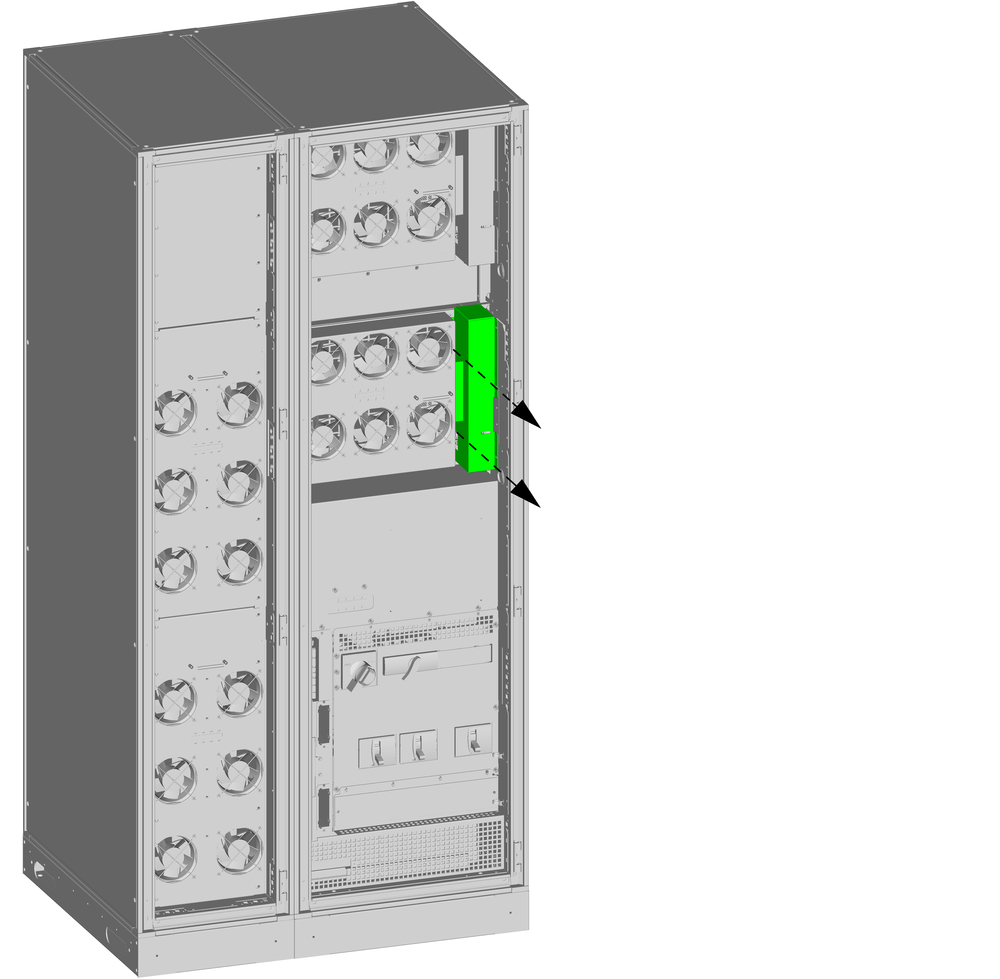
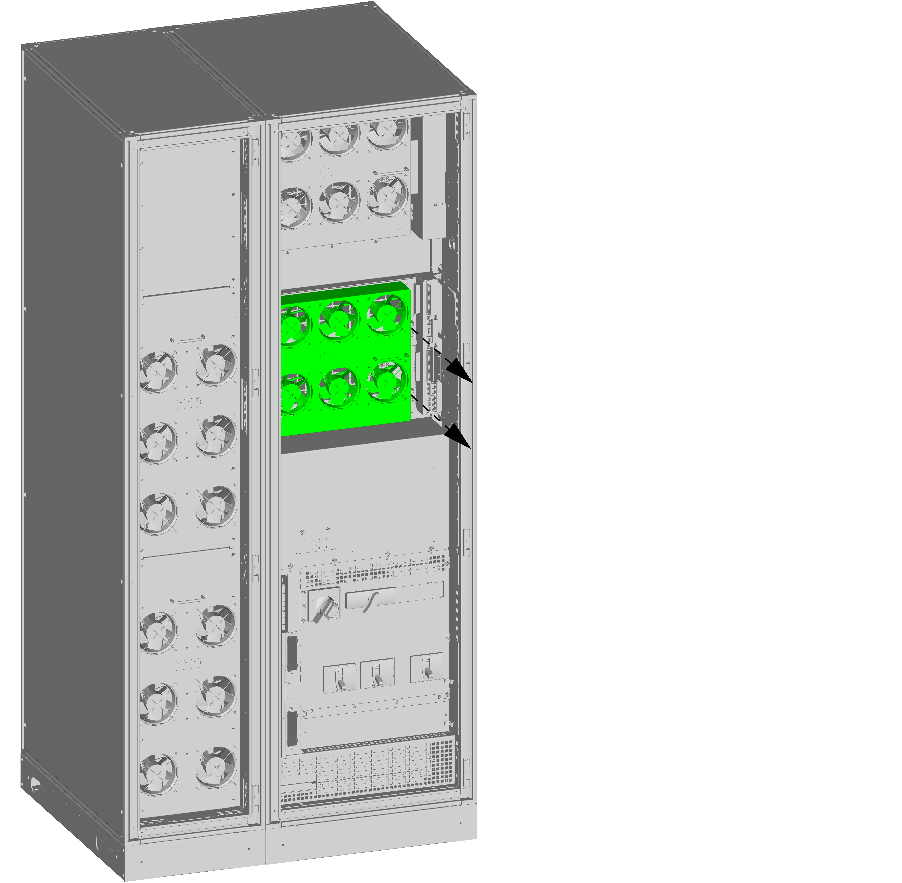
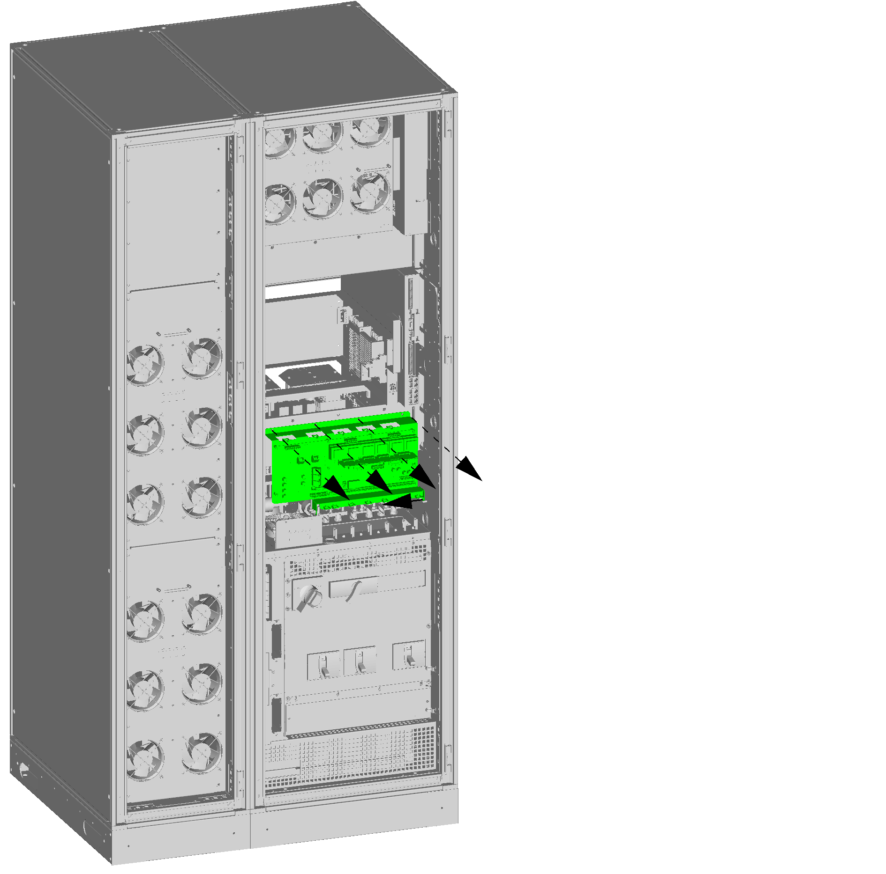
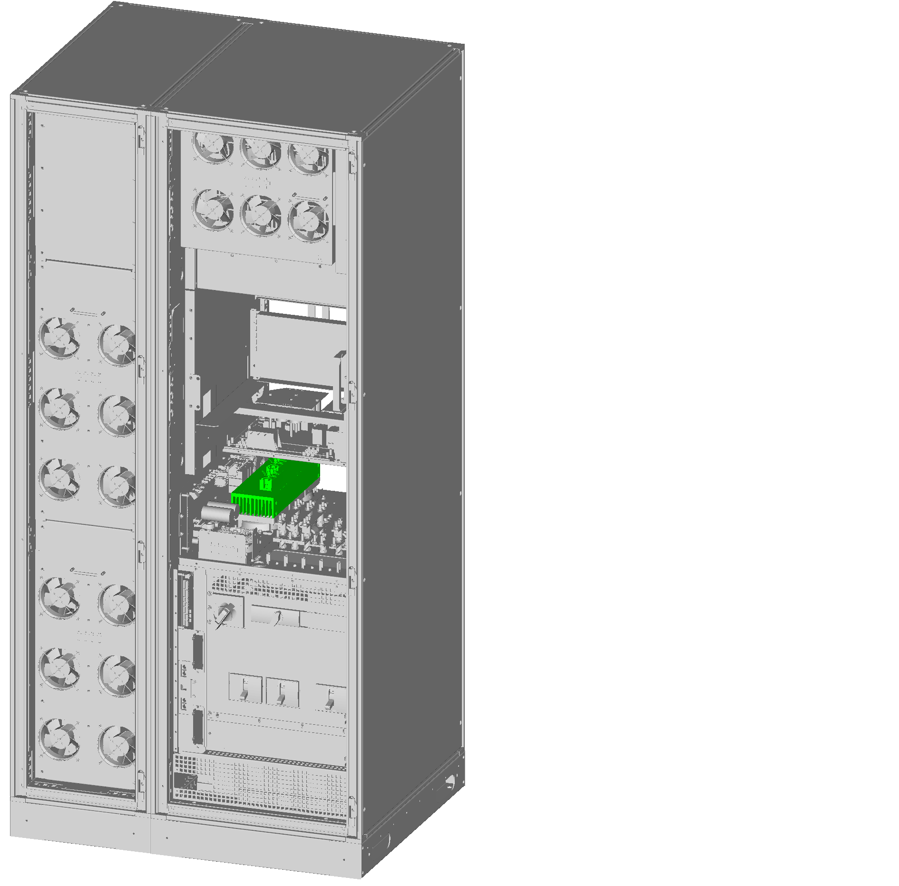

Replace the Static Switch Controller Box Assembly 0J–0N–0909
Reality EMEA10 kVA20 kVA30 kVA40 kVA50 kVA60 kVA80 kVA
DANGER
hazard of electric shock, explosion, or arc flash
Electrical equipment must be installed, operated, serviced, and
maintained only by qualified personnel.
Apply appropriate personal protective equipment (PPE) and follow
safe electrical work practices.
Disconnection devices for AC and DC must be provided by others,
be readily accessible, and the function of the disconnect device marked
for its function.
Turn off all power supplying the UPS system before working on
or inside the equipment.
Before working on the UPS system, check for hazardous voltage
between all terminals including the protective earth.
The UPS contains an internal energy source. Hazardous voltage
can be present even when disconnected from the mains supply. Before
installing or servicing the UPS system, ensure that the units are
OFF and that mains and batteries are disconnected. Wait five minutes
before opening the UPS to allow the capacitors to discharge.
The UPS must be properly earthed/grounded and due to a high leakage
current, the earthing/grounding conductor must be connected first.
Note: This procedure shows the 80
kVA UPS but the procedure is identical for all UPS systems.
Loosen the two nuts and remove the cover in the right side.

Loosen the two nuts and slide out the fan module in front
of the power module as long as the cables allow.

Note the location of the cables connected to the fan module
and disconnect the cables.
Move the fan module completely out of the UPS cabinet.
Loosen the two screws and the two nuts of each plate and
remove the plates.
Slide out the power modules. Start with upper power module.
Loosen the six screws and remove the indicated plate.
Note the location of the cables connected to the interface
board and disconnect the cables.
Loosen the four screws and the nut and slide out the interface
plate with the interface board.

Note the location of the cables connected to the static
switch controller box assembly and disconnect the cables.
Remove the indicated plate.
Slide out the static switch controller box assembly.

Reverse the procedure for installation of the replacement
static switch controller box assembly.